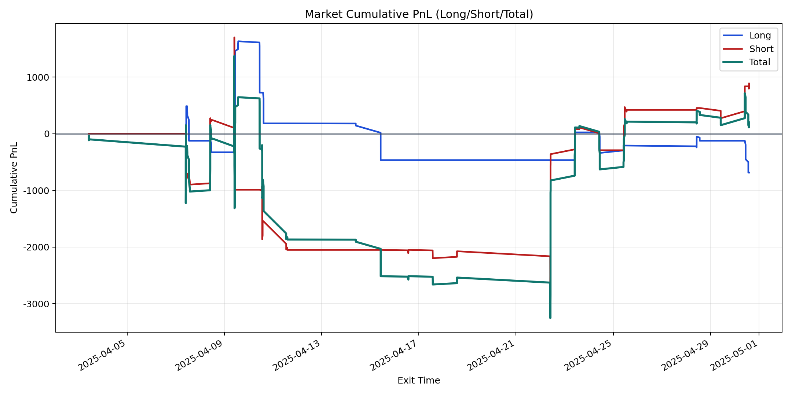
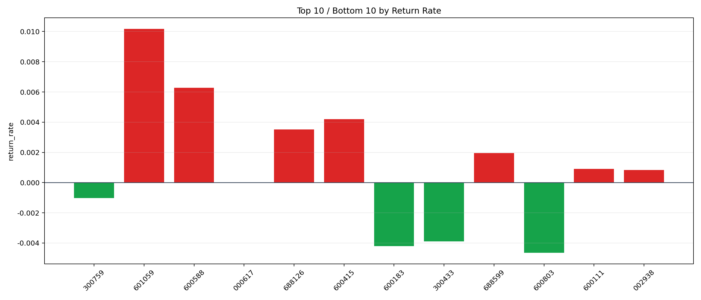

| repo_root | /home/haoranyou/data/output/dynamic_AUM_TAKER_index300 |
|---|---|
| period_months | 1 |
| period_label | 2025-04-03_to_2025-04-30 |
| start_time | 2025-04-03 10:15:12 |
| end_time | 2025-04-30 14:06:17 |
| n_trades | 343 |
| n_symbols | 12 |
| total_pnl | 201.3716500000199 |
| long_total_pnl | -686.0983499999696 |
| short_total_pnl | 887.4699999999898 |
| total_entry_notional | 5951691.000000002 |
| long_entry_notional | 2450337.0 |
| short_entry_notional | 3501354.0000000005 |
| total_return_rate | 3.3834359008224694e-05 |
| long_return_rate | -0.0002800016283474353 |
| short_return_rate | 0.0002534648024735544 |
| top_symbols_by_return | ["601059", "600588", "600415", "688126", "688599", "600111", "002938", "000617", "300759", "300433"] |
| bottom_symbols_by_return | ["600803", "600183", "300433", "300759", "000617", "002938", "600111", "688599", "688126", "600415"] |

